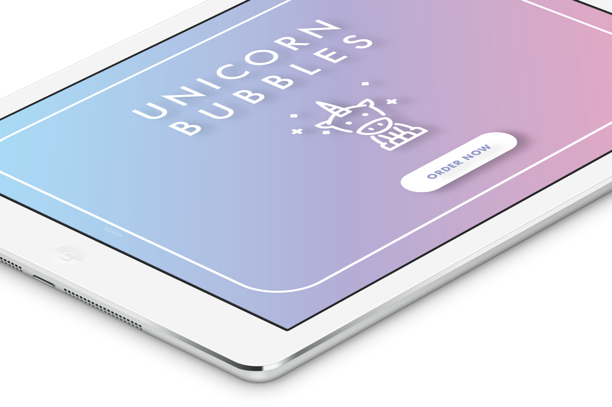
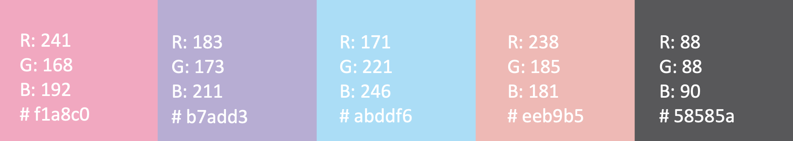

Unicorn Bubbles
iPad app for ordering bubble teas
Unicorn Bubbles needs a Kiosk (iPad) app that allows ordering and customizing bubble tea. It should let customers order multiple drinks with a single submission. There should be a request for confirmation of each drink before adding it to the current order. Calculating and displaying the total amount of each drink and of the total order is another important feature. The final step should be issuing a confirmation of the total order before finally sending it to the barista.
Ideation
Before I jumped into the actual researching, I grabbed my pen and paper and started sketching. I wanted to visualize what was going through my head after I reviewed the key features of the application. My goal was to make design minimalistic as possible without including the price of the items. Implementing the price and checking out process was not part of my design focus. You can see in my first sketch, however, that I tried to put the pricing in there. Through this process I was be able to eliminate parts of the app that could be developed later on. The thinking process for my lo-fi prototyping by hand included the following steps:
- Creating the screens and leaving space on the right for notes
- Freely drawing each element on the screen as I imagine what the next process would look like
- Annotating each element so that I remember later
- Label interactive items such as buttons so that they are distinguishable
- Go back and add extra screens that are needed
I wanted an image of the bubble tea on the side and for it to live update as the user makes changes to the tea. For example, if the user wanted to choose a "peach" flavor milk tea, the color of the bubble tea would change to a pinkish salmon color to reflect that. This image would automatically update according to the selection. The second screen in the sketch has the most annotation because that is when I had to set up the concept and app speculations.

The second set of sketches were formed after I played around with Illustrator for a while. I also did research on figuring out what was realistically possible and what was not. I looked at how I wanted to incorporate the live updating bubble tea. I had to decide if it was going to be a vector or a jpeg. I played around in Photoshop to see what it would look like to have the bubble tea in jpeg format. It was difficult to photoshop, and after I placed them on the background, it did not look sophisticated at all. So I ended up ditching the jpeg and decided to go with the vector for two reasons - easier to replicate and visually appealing. During this step, I was able to decide on the UI elements.


UI Elements & Identity Guide
In order to stay consistent with the design elements and the Human Interface Guidelines, I lowered the saturation of the iOS blue and red to create a pastel gradient. To go along with the name of the app, I decided to go with a unicorn colored theme using white text, vectors, outlines, and buttons. I was inspired by different designs during my research, and reiterated through multiple different versions and was really happy with the final design!
Color harmony is analogous harmony
Interaction Design
Using Adobe XD, I transferred my screens over from Illustrator. I added interactions in between each screen, connecting each of them with a click. Below is the design spec of my application. Click here if you would like to view the full design spec. My design flow started from the home screen, building one off of each other as I clicked through each element like I was a user who was ordering a bubble tea. The scenario was to order 2 Mango Turtle Tea with bubbles and 1 Peach Milk Tea with bubbles. As I thought about the persona and the scenario, I made sure to connect the elements that had to do with the order. The final screen connects back to the home screen to begin another order. Below the design spec shows a screen recording of how my application works.